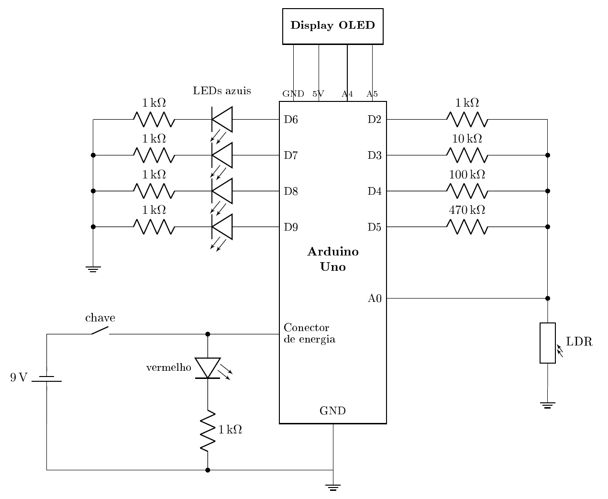

Componentes
Lista de componentes e explicação de como montar o seu próprio LUXIF!
Lista de materiais
| Componente | Qtd. | Função | Observação |
|---|---|---|---|
| Arduino Uno | 1 | Trocar as faixas, ler o sensor e calcular o lux | Para a versão com Wi-Fi, use um ESP32 (veja abaixo) |
| LDR 10 mm | 1 | Mudar a resistência conforme a luz | Pode ser substituído por um LDR de 5 mm |
| Resistor de 1 kΩ | 1 | Referência da faixa de muita luz | — |
| Resistor de 10 kΩ | 1 | Referência da segunda faixa | — |
| Resistor de 100 kΩ | 1 | Referência da terceira faixa | — |
| Resistor de 470 kΩ | 1 | Referência da faixa de pouca luz | — |
| LED azul | 4 | Indicar visualmente qual faixa está sendo utilizada | Pode ser substituído por qualquer outra cor |
| Resistor de 1 kΩ | 4 | Limitar a corrente de cada LED azul | — |
| Display OLED 0,96" (SSD1306, I²C) | 1 | Mostrar a leitura em lux e a faixa em uso | — |
| Bateria 9 V | 1 | Alimentar o circuito quando não estiver conectado ao computador | — |
| Holder de bateria 9 V | 1 | Segurar a bateria | — |
| Cabo com plugue P4 para bateria 9 V | 1 | Ligar a bateria ao conector de energia do Arduino | — |
| Chave gangorra | 1 | Ligar e desligar o circuito | — |
| LED vermelho | 1 | Indicar que o circuito está ligado | Pode ser substituído por qualquer outra cor |
| Resistor de 1 kΩ | 1 | Limitar a corrente do LED vermelho | — |
| Placa perfurada de fibra de vidro | 1 | Base para soldar os componentes | Pode ser substituída por uma protoboard |
| Jumpers macho-macho | Vários | Realizar as ligações | A quantidade depende da disposição na placa |
Esquema elétrico

Ligações pino a pino
| De | Para |
|---|---|
| Bateria (+) | Chave gangorra → polo positivo do conector de energia do Arduino |
| Bateria (−) | Polo negativo do conector de energia do Arduino (ligado ao GND) |
| Saída da chave | LED vermelho → resistor de 1 kΩ → GND |
| D2 | Resistor de 1 kΩ → ponto do divisor |
| D3 | Resistor de 10 kΩ → ponto do divisor |
| D4 | Resistor de 100 kΩ → ponto do divisor |
| D5 | Resistor de 470 kΩ → ponto do divisor |
| Ponto do divisor | A0 e um terminal do LDR |
| Outro terminal do LDR | GND |
| D6, D7, D8 e D9 | LED azul → resistor de 1 kΩ → GND (um conjunto por pino) |
| Display OLED SDA / SCL | A4 / A5 |
| Display OLED VCC / GND | 5V / GND do Arduino |
Como montar
O passo a passo completo, com o motivo de cada ligação, os testes de cada etapa e as soluções para os problemas mais comuns, está na página Monte o seu.
Cuidado: cada LED precisa do seu resistor. Ligado direto no pino, o LED puxa corrente demais e pode queimar, junto com a saída do Arduino.
Versão com Wi-Fi (ESP32)
Para acompanhar as leituras na página Ao vivo, troque o Arduino Uno por um ESP32. O circuito é o mesmo; mudam só os pinos:
| Ligação | Arduino Uno | ESP32 |
|---|---|---|
| Resistores de 1 kΩ, 10 kΩ, 100 kΩ e 470 kΩ | D2, D3, D4, D5 | GPIO 25, 26, 27, 14 |
| LEDs azuis | D6, D7, D8, D9 | GPIO 16, 17, 18, 19 |
| Ponto do divisor | A0 | GPIO 34 |
| Display OLED SDA / SCL | A4 / A5 | GPIO 21 / GPIO 22 |
| Display OLED VCC | 5V | 3V3 |
No ESP32, o ponto do divisor precisa ficar num pino entre o GPIO 32 e o 39: os outros pinos analógicos deixam de funcionar quando o Wi-Fi está ligado.
Como o ESP32 trabalha com 3,3 V, os LEDs azuis brilham menos do que no Arduino. Se ficarem fracos, troque os resistores deles por valores menores (por exemplo, 330 Ω).